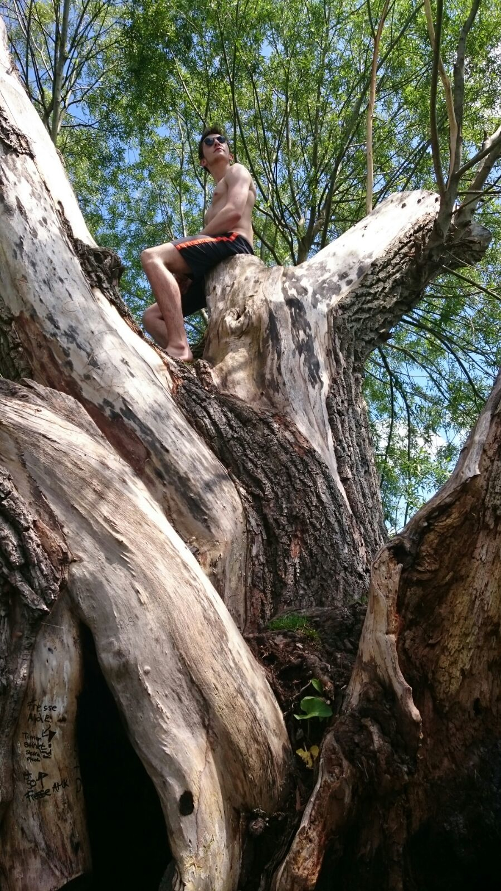

Du begibst dich zum nächstbesten Baum und siehst Leo beim munteren Klettern.

Er hält inne, scheint verwirrt zu sein. Anscheinend sucht er das Baumhaus, was er einst gebaut hat - jedoch lediglich in seinem Traum. War es wohl doch nicht echt?
Er ist abgelenkt. Diesmal kriegst du ihn zu fassen, ganz sicher. Du greifst nach ihm und versuchst ihn mit dir zu ziehen.
Doch plötzlich…